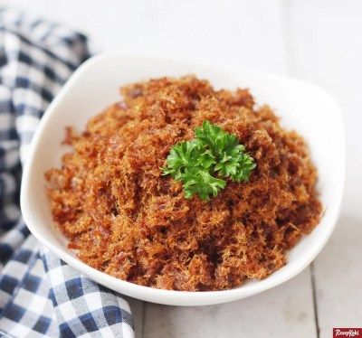
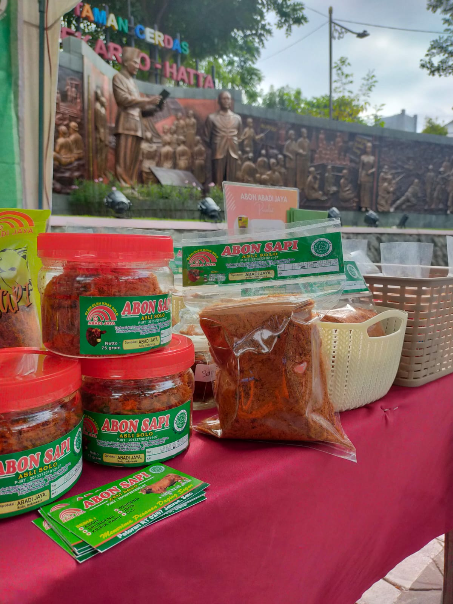

Dibuat dari daging sapi pilihan dengan resep turun-temurun untuk menghasilkan abon yang gurih, renyah, dan tahan lama. Kenikmatan autentik dalam setiap suapan.

Komitmen kami adalah menghadirkan abon sapi berkualitas tinggi dengan standar yang tidak pernah kami kompromikan.
Proses pemesanan yang cepat dan mudah langsung via WhatsApp. Tidak perlu akun atau registrasi apapun.
Tersedia dalam berbagai ukuran dan varian untuk memenuhi kebutuhan Anda, dari konsumsi pribadi hingga oleh-oleh keluarga.
Kepuasan pelanggan adalah prioritas utama kami. Inilah pengalaman nyata dari mereka yang telah mempercayakan kebutuhan abon mereka pada ABADI JAYA.

ABADI JAYA merupakan usaha abon sapi khas Solo yang berkomitmen menghadirkan produk berkualitas dengan cita rasa tradisional dan bahan baku pilihan. Berawal dari dapur keluarga, kami terus berkembang dengan mempertahankan nilai-nilai kesederhanaan dan kejujuran dalam setiap produk yang kami hasilkan.
Selama lebih dari dua dekade, kami telah melayani ribuan pelanggan setia dari berbagai penjuru Indonesia. Kepercayaan mereka adalah motivasi terbesar kami untuk terus berinovasi tanpa meninggalkan akar tradisi.
Lebih dari 20 tahun pengalaman dalam industri abon sapi khas Solo
Dikelola penuh dengan nilai kekeluargaan, kejujuran, dan semangat pelayanan
Tersedia layanan pengiriman ke seluruh wilayah Indonesia dengan pengemasan aman
Seluruh produk ABADI JAYA diproduksi sesuai dengan standar kualitas dan keamanan pangan yang berlaku.
Temukan jawaban atas pertanyaan yang paling sering diajukan oleh pelanggan kami.
Pesan sekarang dan dapatkan abon sapi terbaik langsung ke pintu rumah Anda. Tersedia pengiriman ke seluruh Indonesia.